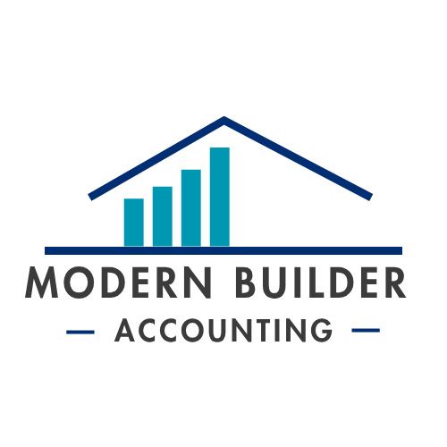

Logo mark: rooflines forming an ascending bar chart in brand blue. No cream/dark-optimized variant was supplied — on dark sections, wrap it in a white chip (as shown) rather than placing it directly on navy.